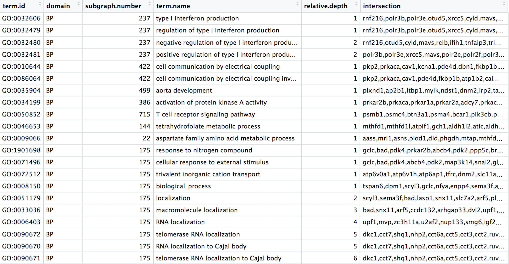
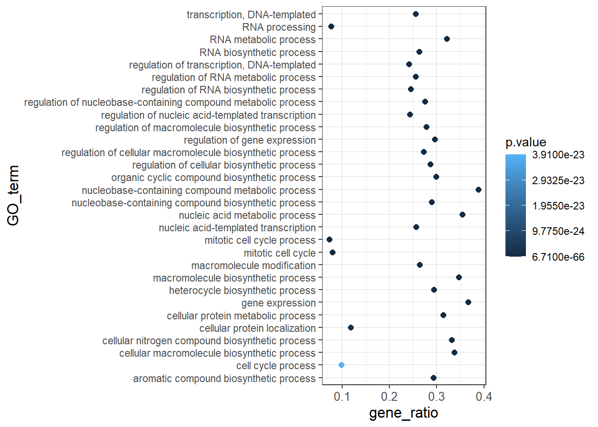

library(tidyverse)19 Tidyverse
20 Data Wrangling with Tidyverse
The Tidyverse suite of integrated packages are designed to work together to make common data science operations more user friendly. The packages have functions for data wrangling, tidying, reading/writing, parsing, and visualizing, among others. There is a freely available book, R for Data Science, with detailed descriptions and practical examples of the tools available and how they work together. We will explore the basic syntax for working with these packages, as well as, specific functions for data wrangling with the ‘dplyr’ package and data visualization with the ‘ggplot2’ package.

20.1 Tidyverse basics
The Tidyverse suite of packages introduces users to a set of data structures, functions and operators to make working with data more intuitive, but is slightly different from the way we do things in base R. Two important new concepts we will focus on are pipes and tibbles.
Before we get started with pipes or tibbles, let’s load the library:
20.1.1 Pipes
Stringing together commands in R can be quite daunting. Also, trying to understand code that has many nested functions can be confusing.
To make R code more human readable, the Tidyverse tools use the pipe, %>%, which was acquired from the magrittr package and is now part of the dplyr package that is installed automatically with Tidyverse. The pipe allows the output of a previous command to be used as input to another command instead of using nested functions.
NOTE: Shortcut to write the pipe is shift + command + M
An example of using the pipe to run multiple commands:
## A single command
sqrt(83)[1] 9.110434## Base R method of running more than one command
round(sqrt(83), digits = 2)[1] 9.11## Running more than one command with piping
sqrt(83) %>% round(digits = 2)[1] 9.11The pipe represents a much easier way of writing and deciphering R code, and so we will be taking advantage of it, when possible, as we work through the remaining lesson.
20.1.2 Tibbles
A core component of the tidyverse is the tibble. Tibbles are a modern rework of the standard data.frame, with some internal improvements to make code more reliable. They are data frames, but do not follow all of the same rules. For example, tibbles can have numbers/symbols for column names, which is not normally allowed in base R.
Important: tidyverse is very opininated about row names. These packages insist that all column data (e.g. data.frame) be treated equally, and that special designation of a column as rownames should be deprecated. Tibble provides simple utility functions to handle rownames: rownames_to_column() and column_to_rownames().
Tibbles can be created directly using the tibble() function or data frames can be converted into tibbles using as_tibble(name_of_df).
NOTE: The function
as_tibble()will ignore row names, so if a column representing the row names is needed, then the functionrownames_to_column(name_of_df)should be run prior to turning the data.frame into a tibble. Also,as_tibble()will not coerce character vectors to factors by default.
20.2 Experimental data
We’re going to explore the Tidyverse suite of tools to wrangle our data to prepare it for visualization. Make sure you have the file called gprofiler_results_Mov10oe.tsv.
The dataset:
- Represents the functional analysis results, including the biological processes, functions, pathways, or conditions that are over-represented in a given list of genes.
- Our gene list was generated by differential gene expression analysis and the genes represent differences between control mice and mice over-expressing a gene involved in RNA splicing.
The functional analysis that we will focus on involves gene ontology (GO) terms, which:
- describe the roles of genes and gene products
- organized into three controlled vocabularies/ontologies (domains):
- biological processes (BP)
- cellular components (CC)
- molecular functions (MF)

20.3 Analysis goal and workflow
Goal: Visually compare the most significant biological processes (BP) based on the number of associated differentially expressed genes (gene ratios) and significance values by creating the following plot:

To wrangle our data in preparation for the plotting, we are going to use the Tidyverse suite of tools to wrangle and visualize our data through several steps:
- Read in the functional analysis results
- Extract only the GO biological processes (BP) of interest
- Select only the columns needed for visualization
- Order by significance (p-adjusted values)
- Rename columns to be more intuitive
- Create additional metrics for plotting (e.g. gene ratios)
- Plot results
20.4 Instructions
Find a partner (or a group of 3 if needed). Choose one person to go through the following steps using Tidyverse, and the other using base R. It is recommended that the person with more experience attempt the steps in base R.
20.5 Tidyverse tools
While all of the tools in the Tidyverse suite are deserving of being explored in more depth, we are going to investigate more deeply the reading (readr), wrangling (dplyr), and plotting (ggplot2) tools.
20.6 1. Read in the functional analysis results
While the base R packages have perfectly fine methods for reading in data, the readr and readxl Tidyverse packages offer additional methods for reading in data. Let’s read in our tab-delimited functional analysis results gprofiler_results_Mov10oe.tsv using read_delim(). Name the dataframe functional_GO_results.
Use one of the base R read.X functions to read in the tab delimited file gprofiler_results_Mov10oe.tsv. Name the dataframe functional_GO_results.
Double check the data types and format of your dataframe. Do the methods yield the same result? Convert anything you think should be a factor into a factor.
NOTE: A large number of tidyverse functions will work with both tibbles and dataframes, and the data structure of the output will be identical to the input. However, there are some functions that will return a tibble (without row names), whether or not a tibble or dataframe is provided.
20.7 2. Extract only the GO biological processes (BP) of interest
Now that we have our data, we will need to wrangle it into a format ready for plotting. To extract the biological processes of interest, we only want those rows where the domain is equal to BP.
For all of our data wrangling steps we will be using tools from the dplyr package, which is a swiss-army knife for data wrangling of data frames.
To extract the biological processes of interest, we only want those rows where the domain is equal to BP, which we can do using the filter() function.
To filter rows of a data frame/tibble based on values in different columns, we give a logical expression as input to the filter() function to return those rows for which the expression is TRUE.
Perform an additional filtering step to only keep those rows where the relative.depth is greater than 4.
Use a conditional expression and indexing ([]) to extract the rows where the domain is equal to BP.
Perform an additional indexing step to only keep those rows where the relative.depth is greater than 4.
Now we have returned only those rows with a domain of BP. How have the dimensions of our results changed?
20.8 3. Select only the columns needed for visualization
For visualization purposes, we are only interested in the columns related to the GO terms, the significance of the terms, and information about the number of genes associated with the terms.
To extract columns from a data frame/tibble we can use the select() function. In contrast to base R, we do not need to put the column names in quotes for selection.
Select the columns term.id, term.name, p.value, query.size, term.size, overlap.size, intersection.
Index the columnsterm.id, term.name, p.value, query.size, term.size, overlap.size, intersection.
Both indexing and the select() function also allows for negative selection. However, select allows for negative selection using column names, while in base R we can only do so with indexes. Note that we need to put the column names inside of the combine (c()) function with a - preceding it for this functionality.
To use column names in base R, we have to use %in%:
# Selecting columns to keep
idx <- !(colnames(functional_GO_results) %in% c("query.number", "significant", "recall", "precision", "subgraph.number", "relative.depth", "domain"))20.9 4. Order GO processes by significance (adjusted p-values)
Now that we have only the rows and columns of interest, let’s arrange these by significance, which is denoted by the adjusted p-value.
Sort the rows by adjusted p-value with the arrange() function.
Sort the rows by adjusted p-value with the order() function.
NOTE: If you wanted to arrange in descending order, then you could have run the following instead:
# Order by adjusted p-value descending
functional_GO_results <- functional_GO_results %>%
arrange(desc(p.value))NOTE: Ordering variables in ggplot2 is a bit different. This post introduces a few ways of ordering variables in a plot.
20.10 5. Rename columns to be more intuitive
While not necessary for our visualization, renaming columns more intuitively can help with our understanding of the data. Let’s rename the term.id and term.name columns.
Rename term.id and term.name to GO_id and GO_term using the rename function. Note that you may need to call rename as dplyr::rename, since rename is a common function name in other packages.
The syntax is new_name = old_name.
Rename term.id and term.name to GO_id and GO_term using colnames and indexing.
20.11 6. Create additional metrics for plotting (e.g. gene ratios)
Finally, before we plot our data, we need to create a couple of additional metrics. Let’s generate gene ratios to reflect the number of DE genes associated with each GO process relative to the total number of DE genes.
This is calculated as gene_ratio = overlap.size / query.size.
The mutate() function enables you to create a new column from an existing column.
Create a new column in the dataframe using the $ syntax or cbind.
The mutate() function enables you to create a new column from an existing column.

20.12 Compare code
Take a look at your code verses your partner’s code. Which method do you think results in cleaner, more readable code? Which steps were easier in base R, and which in Tidyverse?
20.13 Making the Plot
Let’s start by making a scatterplot of the top 30 terms:
bp_plot <- bp_oe[1:30, ]
ggplot(bp_plot) +
geom_point(aes(x = overlap.size, y = p.value))However, instead of a scatterplot with numeric values on both axes, we would like to create a dotplot for visualizing the top 30 functional categories in our dataset, and how prevalent they are. Basically, we want a dotplot for visualizing functional analysis data, which plots the gene ratio values on the x-axis and the GO terms on the y-axis.
Let’s see what happens when we add a non-numeric value to the y-axis and change the x-axis to the “gene_ratio” column:
ggplot(bp_plot) +
geom_point(aes(x = gene_ratio, y = GO_term))Now that we have the required aesthetics, let’s add some extras like color to the plot. Let’s say we wanted to quickly visualize significance of the GO terms in the plot, we can color the points on the plot based on p-values, by specifying the column header.
ggplot(bp_plot) +
geom_point(aes(x = gene_ratio, y = GO_term, color = p.value))You will notice that there are a default set of colors that will be used so we do not have to specify which colors to use. Also, the legend has been conveniently plotted for us!
Alternatively, we could color number of DE genes associated with each term (overlap.size).
ggplot(bp_plot) +
geom_point(aes(x = gene_ratio, y = GO_term, color = overlap.size))Moving forward, we are going to stick with coloring the dots based on the p.value column. Let’s explore some of the other arguments that can be specified in the geom layer.
To modify the size of the data points we can use the size argument. * If we add size inside aes() we could assign a numeric column to it and the size of the data points would change according to that column. * However, if we add size inside the geom_point() but outside aes() we can’t assign a column to it, instead we have to give it a numeric value. This use of size will uniformly change the size of all the data points.
Note: This is true for several arguments, including
color,shapeetc. E.g. we can change all shapes to square by adding this argument to be outside theaes()function; if we put the argument inside theaes()function we could change the shape according to a (categorical) variable in our data frame or tibble.
We have decided that we want to change the size of all the data point to a uniform size instead of typing it to a numeric column in the input tibble. Add in the size argument by specifying a number for the size of the data point:
ggplot(bp_plot) +
geom_point(aes(x = gene_ratio, y = GO_term, , color = p.value),
size = 2)Note: The size of the points is personal preference, and you may need to play around with the parameter to decide which size is best. That seems a bit too small, so we can try out a slightly larger size.
As we do that, let’s see how we can change the shape of the data point. Different shapes are available, as detailed in the RStudio ggplot2 cheatsheet. Let’s explore this parameter by changing all of the points to squares:
ggplot(bp_plot) +
geom_point(aes(x = gene_ratio, y = GO_term, , color = p.value),
size = 2,
shape = "square")Now we can start updating the plot to suit our preferences for how we want the data displayed. The labels on the x- and y-axis are also quite small and not very descriptive. To change their size and labeling, we need to add additional theme layers. The ggplot2 theme() system handles modification of non-data plot elements such as:
- Axis label aesthetics
- Plot background
- Facet label backround
- Legend appearance
There are built-in themes that we can use (i.e. theme_bw()) that mostly change the background/foreground colours, by adding it as additional layer. Alternatively, we can adjust specific elements of the current default theme by adding a theme() layer and passing in arguments for the things we wish to change. Or we can use both, a built-in theme layer and a custom theme layer!
Let’s add a built-in theme layer theme_bw() first.
ggplot(bp_plot) +
geom_point(aes(x = gene_ratio, y = GO_term, , color = p.value),
size = 2) +
theme_bw()Do the axis labels or the tick labels get any larger by changing themes?
Not in this case. But we can add arguments using theme() to change it ourselves. Since we are adding this layer on top (i.e later in sequence), any features we change will override what is set in the theme_bw(). Here we’ll increase the size of the axes labels to be 1.15 times the default size and the x-axis tick labels to be 1.15 times the default.
ggplot(bp_plot) +
geom_point(aes(x = gene_ratio, y = GO_term, color = p.value),
size = 2) +
theme_bw() +
theme(axis.text.x = element_text(size=rel(1.15)),
axis.title = element_text(size=rel(1.15)))
Note #1: When modifying the size of text we often use the
rel()function to specify the size we want relative to the default. We can also provide a numeric value as we did with the data point size, but it can be cumbersome if you don’t know what the default font size is to begin with.Note #2: You can use the
example("geom_point")function here to explore a multitude of different aesthetics and layers that can be added to your plot. As you scroll through the different plots, take note of how the code is modified. You can use this with any of the differentgeomlayers available inggplot2to learn how you can easily modify your plots!Note #3: RStudio provides this very useful cheatsheet for plotting using
ggplot2. Different example plots are provided and the associated code (i.e whichgeomorthemeto use in the appropriate situation.)
20.13.1 Customizing data point colors
The plot is looking better, but it is hard to distinguish differences in significance based on the colors used. There are cheatsheets available for specifying the base R colors by name or hexadecimal code. We could specify other colors available or use pre-created color palettes from an external R package.
To make additional color palettes available for plotting, we can load the RColorBrewer library, which contains color palettes designed specifically for the different types of data being compared.
# Load the RColorBrewer library
library(RColorBrewer)
# Check the available color palettes
display.brewer.all()
The output is separated into three sections based on the suggested palettes for sequential, qualitative, and diverging data.
- Sequential palettes (top): For sequential data, with lighter colors for low values and darker colors for high values.
- Qualitative palettes (middle): For categorical data, where the color does not denote differences in magnitude or value.
- Diverging palettes (bottom): For data with emphasis on mid-range values and extremes.
Since our adjusted p-values are sequential, we will choose from these palettes. Let’s go with the “Yellow, orange, red” palette. We can choose how many colors from the palette to include, which may take some trial and error. We can test the colors included in a palette by using the display.brewer.pal() function, and changing if desired:
# Testing the palette with six colors
display.brewer.pal(6, "YlOrRd")
The yellow might be a bit too light, and we might not need so many different colors. Let’s test with three different colors:
# Testing the palette with three colors
display.brewer.pal(3, "YlOrRd")# Define a palette
mypalette <- brewer.pal(3, "YlOrRd")
# how are the colors represented in the mypalette vector?
mypalette[1] "#FFEDA0" "#FEB24C" "#F03B20"Those colors look okay, so let’s test them in our plot. We can add a color scale layer, and most often one of the following two scales will work:
scale_color_manual(): for categorical data or quantilesscale_color_gradient()family: for continuous data.
By default, scale_color_gradient() creates a two color gradient from low to high. Since we plan to use more colors, we will use the more flexible scale_color_gradientn() function. To make the legend a bit cleaner, we will also perform a -log10 transform on the p-values (higher values means more significant).
ggplot(bp_plot) +
geom_point(aes(x = gene_ratio, y = GO_term, color = -log10(p.value)),
size = 2) +
theme_bw() +
theme(axis.text.x = element_text(size=rel(1.15)),
axis.title = element_text(size=rel(1.15))) +
xlab("Gene ratios") +
ylab("Top 30 significant GO terms") +
ggtitle("Dotplot of top 30 significant GO terms") +
theme(plot.title = element_text(hjust=0.5,
face = "bold")) +
scale_color_gradientn(colors = mypalette)This looks good, but we want to add better name for the legend and we want to make sure the legend title is centered and bold. To do this, we can add a name argument to scale_color_gradientn() and a new theme layer for the legend title.
ggplot(bp_plot) +
geom_point(aes(x = gene_ratio, y = GO_term, color = -log10(p.value)),
size = 2) +
theme_bw() +
theme(axis.text.x = element_text(size=rel(1.15)),
axis.title = element_text(size=rel(1.15))) +
xlab("Gene ratios") +
ylab("Top 30 significant GO terms") +
ggtitle("Dotplot of top 30 significant GO terms") +
theme(plot.title = element_text(hjust=0.5,
face = "bold")) +
scale_color_gradientn(name = "Significance \n (-log10(padj))", colors = mypalette) +
theme(legend.title = element_text(size=rel(1.15),
hjust=0.5,
face="bold"))20.14 Additional resources
The materials in this lesson have been adapted from work created by the (HBC)](http://bioinformatics.sph.harvard.edu/) and Data Carpentry (http://datacarpentry.org/). These are open access materials distributed under the terms of the Creative Commons Attribution license (CC BY 4.0), which permits unrestricted use, distribution, and reproduction in any medium, provided the original author and source are credited.